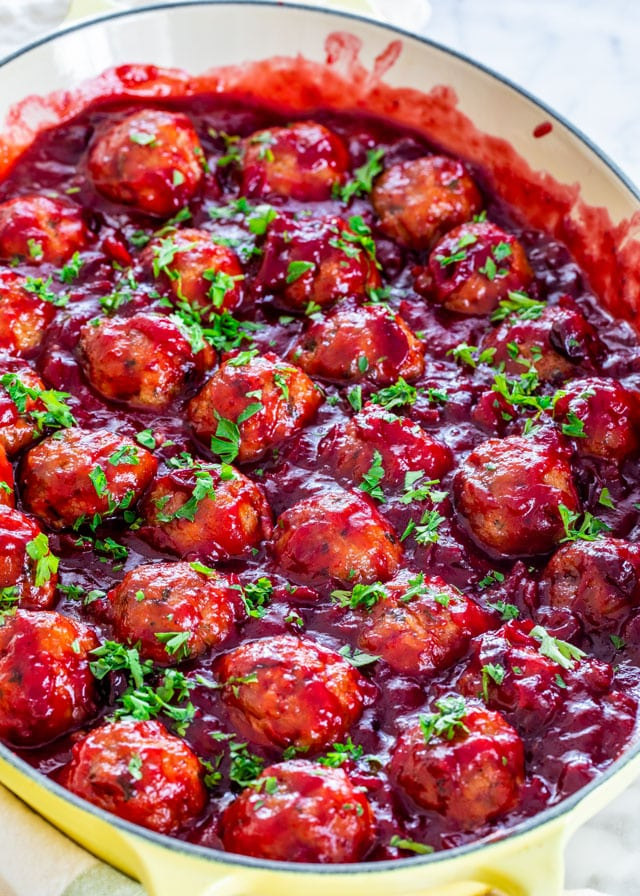

Cranberry Meatballs

This is a great recipe for people who would like to try something different for Thanksgiving. It makes a delicious side to any kind of turkey dish, and is very simple to make.
Ingredients
- 2 pounds ground beef
- 1 cup bread crumbs
- 2 eggs, beaten
- 2 tablespoons soy sauce
- 1/4 teaspoon ground black pepper
- 1/2 teaspoon garlic powder
- 1/3 cup ketchup
- 1 (16 ounce) can jellied cranberry sauce
- 1 (18 ounce) bottle barbecue sauce
- 2 tablespoons brown sugar
- 1 tablespoon lemon juice
Steps
- Preheat oven to 350 degrees F. (175 degrees C).
- Mix together the hamburger, bread crumbs, eggs, soy sauce, pepper, garlic powder and ketchup. Form into small balls and bake for 30 minutes.
- In a saucepan over low heat, combine the cranberry sauce, barbecue sauce, brown sugar and lemon juice. Simmer and stir until smooth. Add meat balls and simmer for I hour. Serve warm.